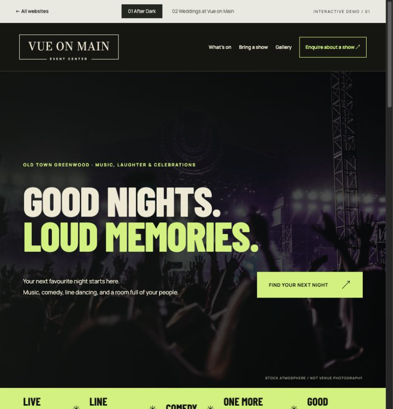
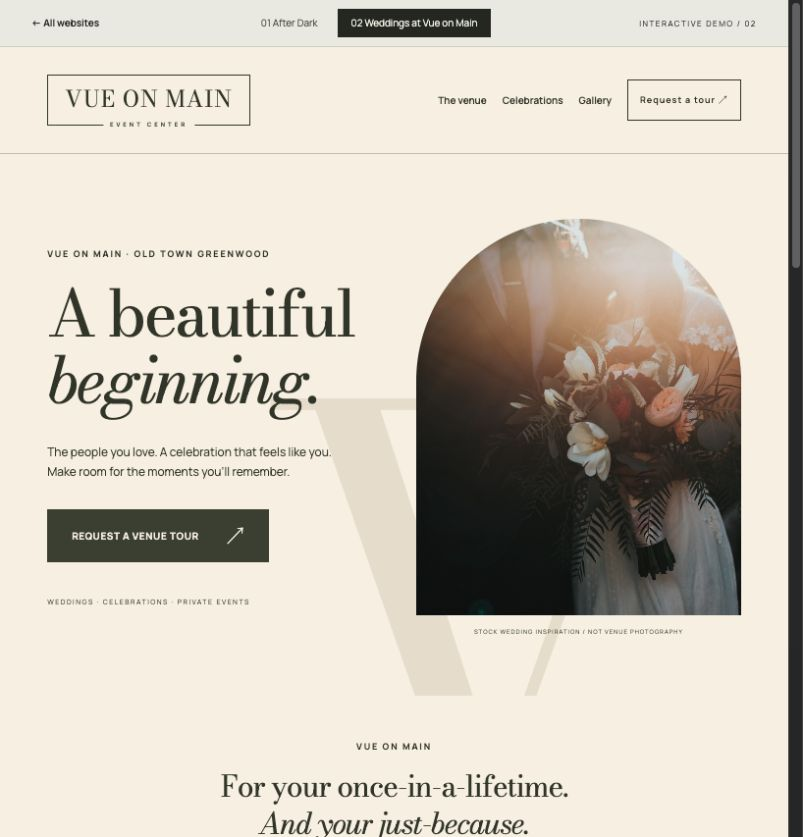

01 / ENTERTAINMENT FIRST

After Dark
Big type. Full-volume energy. A calendar that gets people through the door.
Concerts · Line dancing · ComedyOpen full website ↗
TWO WEBSITES · ONE VENUE BUSINESS
A night worth going out for.
A day worth celebrating.
Vue on Main, Old Town Greenwood. Two separate experiences: After Dark for entertainment, and Weddings at The VUE for couples and private celebrations. Click either image to explore the interactive website preview.
Explore both websites ↓
Big type. Full-volume energy. A calendar that gets people through the door.

Quiet confidence. Romantic detail. A venue couples can picture themselves in.